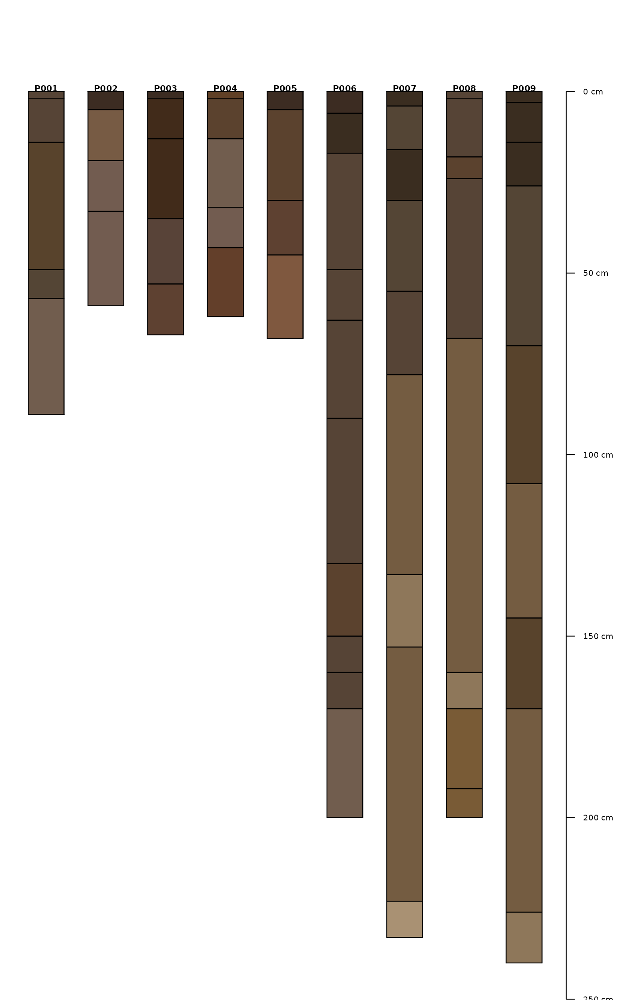

Add depth brackets to soil profile sketches.
Usage
addBracket(
x,
labcol = NULL,
agg = FALSE,
hzDepths = NULL,
label.cex = 0.75,
tick.length = 0.05,
arrow.length = 0.05,
offset = -0.3,
missing.bottom.depth = NULL,
...
)Arguments
- x
data.framecontaining at least:idname(x)(profile ID) andhorizonDepths(x)(horizon top and bottom depths)- labcol
character, optional name of a column in
xused for labeling- agg
logical, aggregate multiple brackets per profile into a single depth range?
- hzDepths
character vector of length 2, optional column names in
xthat define bracket top and bottom depths. WhenNULL, use horizon top/bottom column names from theSoilProfileCollectionobject used by the last call toplotSPC().- label.cex
numeric, scaling factor for label font
- tick.length
numeric, length of bracket "tick" mark
- arrow.length
numeric, length of arrowhead (see
arrows())- offset
numeric, left-hand offset from each profile
- missing.bottom.depth
numeric, distance (in depth units) to extend brackets that are missing a lower depth (defaults to max depth of collection)
- ...
further arguments passed on to
segments()orarrows()
Details
When x contains multiple records per profile a bracket will be created for each record. Setting agg = TRUE will first aggregate all records per profile, then add a single bracket spanning the depth range of those records. Additional examples can be found in this tutorial.
Note
This is a low-level plotting function: you must first plot a SoilProfileCollection object before using this function. Details about the last plotted SoilProfileCollection are available using get('last_spc_plot', envir = aqp.env).
Examples
# example data
x <- c(
'P1:AAA|BwBwBwBw|CCCCCCC|CdCdCdCd',
'P2:Ap|AA|E|BhsBhs|Bw1Bw1|CCCCC',
'P3:A|Bt1Bt1Bt1|Bt2Bt2Bt2|Bt3|Cr|RRRRR',
'P4:AA|EEE|BhsBhsBhsBhs|BwBw|CCCCC',
'P5:AAAA|ACACACACAC|CCCCCCC|CdCdCd'
)
s <- quickSPC(x)
# change horizon depth names
# ensure that plotSPC() -> addBracket() can find them
horizonDepths(s) <- c('tt', 'bb')
# expression defines a single reference horizon in most profiles
.ex <- grepl('Bt3|Bw', s$name)
# encode for thematic profile sketches
s$e <- factor(as.character(.ex), levels = c('FALSE', 'TRUE'), labels = c('Horizons', 'Reference'))
# get horizon row indices to horizons above reference
a <- hzAbove(s, .ex, SPC = FALSE, simplify = TRUE)
#> Error in eval(.dots[[i]], .data, parent.frame(n = 2)): object '.ex' not found
# create bracket data.frame
b <- depths(s, hzID = FALSE)[a, ]
#> Error: object 'a' not found
# add labels
b$label <- c('S')
#> Error: object 'b' not found
op <- par(no.readonly = TRUE)
par(mar = c(0, 0, 3, 2), mfcol = c(1, 2))
# sketches
plotSPC(
s, color = 'e', col.label = 'Original', col.palette = c('grey', 'royalblue'),
name = 'name', name.style = 'center-center', cex.names = 0.75,
max.depth = 180
)
# plot individual brackets, no labels
addBracket(
b,
agg = FALSE, labcol = 'label',
offset = -0.35, col = 'black', tick.length = 0.04, lwd = 1
)
#> Error: object 'b' not found
# sketches
plotSPC(
s, color = 'e', col.label = 'Aggregate', col.palette = c('grey', 'royalblue'),
name = 'name', name.style = 'center-center', cex.names = 0.75,
max.depth = 180
)

# aggregate multiple brackets into single depth span
# include first label from each group
addBracket(
b,
agg = TRUE, labcol = 'label',
offset = -0.35, col = 'firebrick', tick.length = 0.04, lwd = 2
)
#> Error: object 'b' not found
par(op)